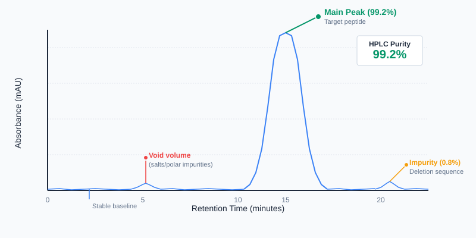

This is what 99.2% purity looks like
Here's how to read an HPLC chromatogram in 60 seconds:
- One tall peak (your peptide) dominates the graph
- Area under that peak = purity %
- Small side peaks (<1% each) = normal impurities
- Multiple large peaks = red flag
If the chromatogram doesn't match these patterns, the COA needs scrutiny — even if the purity number looks good.
It doesn't. Once you understand what you're looking at, reading an HPLC chromatogram becomes straightforward. This guide breaks down the anatomy of an HPLC trace, explains what each element means, and shows you how to spot red flags that indicate poor synthesis quality or contamination.
If you're evaluating research peptides for laboratory use, this is the skill that separates verification from blind trust.
What Is HPLC and Why Does It Matter?
High-Performance Liquid Chromatography (HPLC) is the analytical gold standard for measuring peptide purity. It works by passing a dissolved sample through a column that separates molecules based on their chemical properties. Pure peptides exit the column at a specific time (called retention time), while synthesis byproducts and related impurities exit at different times.
The result is a chromatogram: a graph that plots time (x-axis) against absorbance (y-axis). Each peak represents a different molecule detected as it exits the column.
For peptide verification, HPLC answers one critical question: What percentage of the sample is the target peptide, and what percentage is something else?
Anatomy of an HPLC Chromatogram
X-Axis: Retention Time (Minutes)
The horizontal axis shows time elapsed since the sample was injected. Most peptide analyses run 10-30 minutes depending on the method.
The main peak (target peptide) appears at a consistent retention time for that specific compound and method. Retention time varies by column type, mobile phase, and gradient — it's not universal across labs, but it should be reproducible within the same method.
Y-Axis: Absorbance (mAU)
The vertical axis measures absorbance — how much light the detector absorbed as each molecule passed through. Taller peaks mean higher concentrations of that molecule.
Most peptide HPLC tests use 214 nm wavelength, where the amide bond in the peptide backbone absorbs strongly due to π→π* electronic transitions. This makes the method highly sensitive to peptides and peptide-related impurities.
The Main Peak
This is the tall, sharp peak that represents your target peptide. In a high-purity sample (>99%), this peak dominates the chromatogram.
What to look for:
- Symmetry: The peak should be relatively symmetrical — a smooth rise and fall. Asymmetry can indicate degradation or column issues.
- Sharpness: A clean, narrow peak suggests good separation and high purity. Broad peaks can indicate aggregation or poor resolution.
- Height: The main peak should dwarf any other peaks present.
Area Under the Curve = Purity %
Purity isn't measured by peak height — it's measured by area under the curve. The HPLC software integrates the area of each peak, then calculates what percentage of the total detected area belongs to the main peak.
Example:
- Main peak area: 99.2% → Purity: 99.2%
- Small impurity peak area: 0.8%
This is the number reported as "Purity by HPLC" on the COA.
Important caveat: HPLC only detects molecules that absorb at the detection wavelength (214 nm for peptides). Impurities without peptide bonds — salts, organic solvents, residual TFA counterions — may not show up on the chromatogram at all. This is why quantitative content testing and mass spectrometry (identity confirmation) are also critical for full verification.
Impurity Peaks
Any additional peaks are impurities. These can be:
- Deletion or truncation sequences (incomplete peptide chains from synthesis)
- Deamidation or oxidation products (degradation from storage or handling)
- Starting materials or reagents (residues from the synthesis process)
Small impurity peaks (<1% each) are normal even in high-purity samples. Peaks above ~1-2% indicate lower synthesis quality or significant contamination. A common industry benchmark for research-grade peptides is ≥95% purity, with no single impurity above 1-2%.
Reading a Real Chromatogram: What to Check
When you review an HPLC chromatogram on a COA, follow this checklist:
1. Identify the Main Peak
Look for the tallest, sharpest peak. This should be your target peptide. If multiple peaks have similar heights, something is wrong — either the purity calculation is incorrect or the sample contains significant impurities.
2. Check for Baseline Stability
The baseline (the flat line when no peaks are present) should be smooth and near zero. A drifting or noisy baseline can indicate instrument issues or sample contamination, which may affect accuracy.
3. Count the Impurity Peaks
How many other peaks are visible? If you see more than 2-3 small peaks, the sample may have synthesis or handling issues. Each additional peak represents a contaminant or degradation product.
4. Assess Peak Symmetry
- Tailing (long tail on the right side): Can indicate column degradation or interaction with impurities.
- Fronting (leading edge on the left): Often a sign of column overload or sample prep issues.
- Splitting (double peaks where one is expected): Suggests degradation, diastereomers, or incomplete synthesis.
5. Compare Purity % to Peak Visuals
If the COA reports 99.5% purity, you should see one dominant peak that clearly accounts for nearly all the area. If multiple peaks look similar in size, either the purity calculation is incorrect or the wrong peak was integrated as the main compound.
6. Check for Void Volume Peaks
A peak appearing in the first 1-2 minutes (the "void volume") often represents unretained material — salts, polar impurities, or the solvent front. These aren't included in purity calculations, but their presence can indicate formulation or sample prep issues.
Worked Example: Reading a Real COA
Sample COA excerpt:
- Reported purity: 98.7%
- Chromatogram shows:
- Main peak at 12.4 minutes (area: 98.7%)
- Small peak at 8.2 minutes (area: 0.9%)
- Tiny peak at 15.1 minutes (area: 0.4%)
- Baseline: flat, minimal noise
Verdict: Credible.
The main peak dominates (98.7% of total area), the impurities are small and discrete, and the baseline is stable. The reported purity matches the visual — this is what a high-quality research peptide looks like.
Contrast: Red flag chromatogram
- Reported purity: 97.5%
- Chromatogram shows:
- Two peaks of similar height (one at 11.8 min, one at 12.9 min)
- Broad, tailing shape on both peaks
- Noisy baseline
Verdict: Suspect.
If two peaks have similar areas, the "purity" number is ambiguous — which peak is the target compound? The broad tailing suggests poor separation or degradation. Even if the math says 97.5%, this chromatogram indicates a problem with synthesis or method development.
Red Flags: When a Chromatogram Looks Wrong
🚩 Multiple peaks of similar height
High-purity peptides should have one dominant peak. Multiple peaks of similar area suggest significant impurities or ambiguous integration.
🚩 Broad or split main peak
Indicates degradation, poor synthesis, or the presence of diastereomers. This reduces effective purity even if the reported number looks acceptable.
🚩 Baseline drift or noise
A noisy baseline makes accurate integration difficult. If the baseline isn't stable, the purity calculation may be unreliable.
🚩 Peak at the void volume (very early, <2 min)
Represents unretained material — salts, polar impurities, or solvent front. Not counted in purity, but suggests formulation issues.
🚩 No chromatogram provided
If a COA reports HPLC purity but doesn't include the actual chromatogram, you're taking the vendor's word. Legitimate third-party labs (like Janoshik) always include the raw trace.
Why 214nm Wavelength Matters
Most peptide HPLC methods use UV detection at 214 nm because the amide bond in the peptide backbone absorbs strongly at this wavelength. This makes 214 nm universally sensitive to peptides regardless of sequence.
Some methods also scan at 280 nm, which detects aromatic amino acids (tryptophan, tyrosine, phenylalanine). If your peptide contains these residues, a 280 nm trace can provide additional confirmation.
If a COA lists detection at a non-standard wavelength (say, 254 nm or 220 nm), it's not necessarily wrong — but 214 nm is the peptide-specific standard. Deviating from it without explanation can be a yellow flag.
What HPLC Can't Tell You
HPLC tells you purity — what percentage of the detected signal is the target peptide. But it doesn't tell you:
- Identity (whether that peak is actually the peptide you ordered)
- Absolute mass (how many milligrams are in the vial)
- Safety (bacterial endotoxin contamination)
For complete verification, you need:
- HPLC → Purity (what % is the target compound?)
- LC-MS (mass spectrometry) → Identity (is it the right molecule?)
- Quantitative mass measurement → Content (how much is in the vial?)
- LAL endotoxin test → Safety (is it contaminated?)
For a full breakdown of how to read a Janoshik COA, including quantitative mass measurement and endotoxin sections, see our guide on How to Read a Janoshik Certificate of Analysis.
We'll cover how to read mass spectrometry data in the next post in this series.
What Janoshik COAs Show
Janoshik Analytical is a widely used third-party lab in the research peptide space. Their HPLC reports include:
- Chromatogram image – The full HPLC trace
- Purity by HPLC (%) – Calculated from peak area integration
- Retention time – When the main peak eluted
- Method details – Column type, mobile phase, detection wavelength
When reading a Janoshik COA, focus on the chromatogram first. If it shows a single dominant peak with minimal background noise and no significant impurity peaks, the reported purity is credible. If you see multiple large peaks or irregular shapes, treat the purity number with skepticism — even if it says ">98%."
Janoshik provides all four verification tests. A full COA includes the HPLC chromatogram, mass spec data, quantitative content, and endotoxin results. If you're only getting one or two of these tests, you're not getting full verification.
Summary: The Checklist
When reviewing an HPLC chromatogram on a COA:
✅ One dominant peak – Sharp, symmetrical, and much taller than any other peaks
✅ Purity ≥98-99% – Reported purity should match the visual dominance of the main peak
✅ Stable baseline – Flat, minimal noise
✅ Few or no impurity peaks – Small peaks (<1%) are normal; larger ones warrant scrutiny
✅ Chromatogram included – If it's not shown, the purity claim is unverifiable
If the chromatogram looks clean and the purity number is high, you have credible evidence that your peptide is what it claims to be. If the trace shows multiple peaks, irregular shapes, or baseline issues, proceed with caution — even if the reported purity looks acceptable.
HPLC isn't perfect. But combined with mass spectrometry and endotoxin testing, it's the best tool we have for verifying peptide purity in a research context. Learn to read it, and you'll never rely on a vendor's word alone.
Frequently Asked Questions
- What's a good purity for research peptides?
- ≥98% is the standard target for high-quality research peptides; ≥99% is preferred for sensitive analytical work. A common industry benchmark for research-grade peptides is ≥95% purity, with no single impurity above 1-2%. Purity below 95% may indicate synthesis issues or degradation.
- Why does retention time change between labs?
- Retention time depends on the column type, mobile phase composition, gradient profile, and temperature. A peptide might elute at 12 minutes in one lab's method and 18 minutes in another's. Retention time is reproducible within a method, but not universal across labs.
- Can HPLC detect endotoxins?
- No. Endotoxins (bacterial lipopolysaccharides) don't absorb at 214 nm and typically don't resolve well on reversed-phase HPLC columns. Endotoxin detection requires a separate LAL (Limulus Amebocyte Lysate) assay.
- What if a COA shows purity "by HPLC" but no chromatogram?
- Without the chromatogram, you can't verify how purity was calculated or check for red flags. Legitimate third-party labs always include the raw trace. If it's missing, the claim is unverifiable.
- Does high HPLC purity mean the peptide is correct?
- Not necessarily. HPLC confirms purity (% target compound) but doesn't confirm identity (whether it's the right compound). For that, you need mass spectrometry. A sample can be 99% pure and still be the wrong peptide.